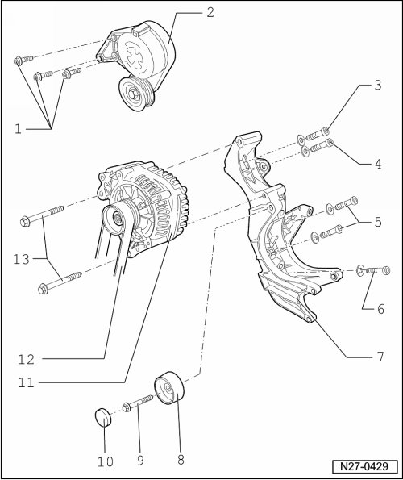

Generator Assembly Overview
Generator Assembly Overview

1 - Socket head bolt with washer
• M8 x 30 mm
• 20 Nm
2 - Tension roller
3 - Socket head bolt with washer
• M8 x 1.57 in
• 20 Nm
4 - Fitted bolt with washer
• M8 x 0.98 in
• 20 Nm
5 - Socket head bolts with washer
• M8 x 1.57 in
• 20 Nm
6 - Fitted bolt with washer
• M8 x 0.98 in
• 20 Nm
7 - Bracket
8 - Idler pulley
9 - Fitted bolt with hex head
• Component of relay pulley item 8, cannot be replaced separately
• M10 x 1.97 in
• 40 Nm
10 - Cap
11 - Generator
• B+ wire fastener to generator, 15 Nm --> [ B+ Cable Mount to Generator ] Description and Operation
• Neither voltage regulator nor carbon brushes can be replaced individually; if a repair is required, entire generator must be replaced.
• Generator, removing and installing --> [ Generator ] Generator
• Generator ribbed belt pulley, removing and installing --> [ Generator Ribbed Belt Pulley ] Generator Ribbed Belt Pulley
12 - Ribbed belt
• Ribbed belt, checking --> [ Ribbed Belt, Checking ] Testing and Inspection
• Ribbed belt routing --> [ Ribbed Belt Routing ] Ribbed Belt Routing
13 - Collar bolts
• M8 x 3.54 in
• 20 Nm